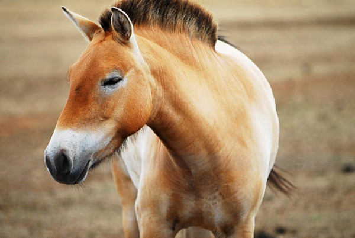

O cavalo-de-przewalski (Equus ferus przewalskii) é uma subespécie selvagem de cavalo (Equus ferus), nativa dos desertos da Mongólia. Oficialmente se encontrava extinta na natureza, mas, graças a um projecto internacional, tem sido reintroduzida em seu habitat natural.
O cavalo-de-przewalski foi descrito pela primeira vez pelo general e naturalista amador russo Nikolaï Mikhaïlovitch Prjevalski em 1881, que viajou à sua procura após se deparar com relatos da sua existência. A descoberta gerou o interesse de vários zoos europeus, que adquiriram cerca de 20 exemplares. A população selvagem desapareceu nos anos 1960, tendo o último animal selvagem sido avistado em 1969. Desde o início dos anos 90 vários programas de reprodução em cativeiro têm encontrado sucesso, e já houve a libertação de uma manada na Mongólia, tornando-se assim um cavalo assilvestrado como o garrano português.
Em 2020 clonaram com sucesso um cavalo desta espécie no Jardim Zoológico de San Diego, nos Estados Unidos da América.
Descrição
O cavalo-de-przewalski é muito semelhante ao cavalo doméstico, mas menor e mais robusto. Os adultos medem cerca de 2 metros de comprimento e pesam em média cerca de 300 kg. A sua pelagem é castanha parda e a crina, erecta, é de cor negra. Alguns exemplares têm as patas riscadas, fazendo lembrar zebras.
Ecologia
A organização social desses animais faz-se em grupos familiares dominados por um macho, várias fêmeas e suas pequenas crias. Os juvenis abandonam o grupo por volta dos 3 anos, sendo as fêmeas incorporadas desde logo noutra manada. Os jovens machos passam vários anos em pequenos grupos, antes de se lançarem na conquista do seu próprio grupo de fêmeas.
Cruzamento
Em Portugal esta raça de cavalo não existe sob a forma pura. Existem alguns equídeos que são extremamente parecidos visualmente, mas são resultado de cruzamento com outras raças de cavalos.
Referências
Extinto no Meio Natural: Uma espécie está extinta no meio natural quando se sabe que sobrevive apenas em cultivo, em cativeiro ou como uma população naturalizada a uma distância considerável de sua área natural. O cavalo de Przewalski (Equus przewalskii) é o único cavalo selvagem verdadeiro. Originalmente, esta espécie se distribuía na Mongólia, na China e no Turquestão. Restam ainda cerca de 200 cavalos, todos em zoológicos
Origem: Wikipédia, a enciclopédia livre.